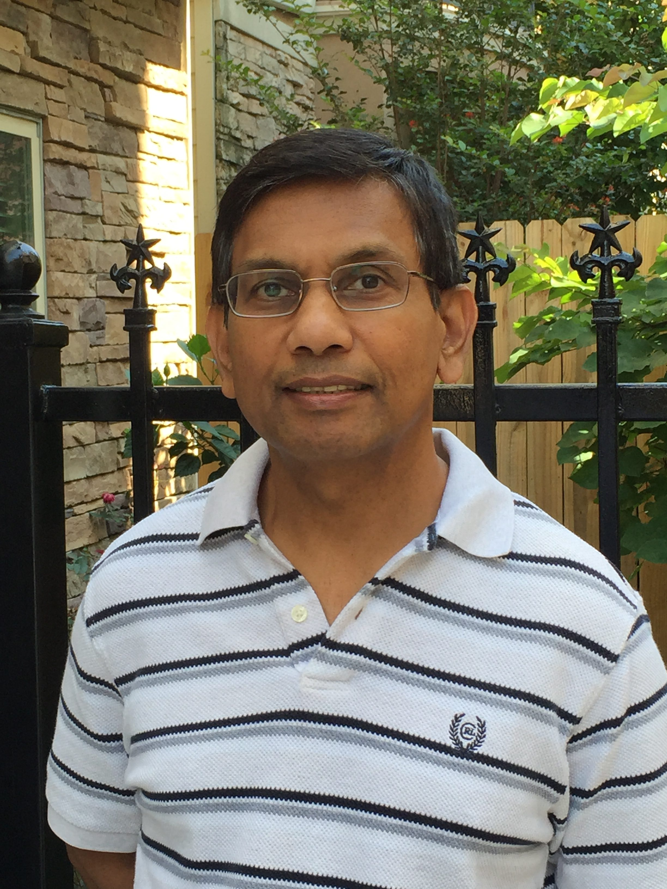

Revised March 9, 2017; November 10, 2018; August 13, 2019; November 11, 2023
My name is Lal Ariyaratna Pinnaduwage. I loved physics from my school days and became a physicist, a Senior Scientist at the Oak Ridge National Laboratory, and a Research Professor at the University of Tennessee, Knoxville. I was elected a Fellow of the American Physical Society in 2004. Since retiring in 2009 at age 55, I have been on a quest to uncover the pure Dhamma of the Buddha.

Even though I am a Buddhist by birth, I did not really "practice" until I retired. Initially, it was to find out what "Buddhism" really was and how it compared with other world religions.
- I provided the above description in keeping with my intention to be fully open. Also, I intend to make the website "as experienced" by myself. I will specifically mention what I have not experienced as such. I will record my progress on these web pages as much as possible. (Not everybody will have the same experiences related to samadhi, jhāna, or magga phala).
- I have found that Buddha Dhamma differs from other religions and the many forms of "Buddhism" today. Other religious and cultural influences have contaminated even the Theravada version.
In July 2013, I discovered new interpretations of anicca, dukkha, and anatta (true Nature of existence). It was "the main missing piece" for me. I will never forget the ecstatic feeling while listening to that fateful desana from one Thero on July 30, 2013, on the internet. I traveled to Sri Lanka and found more information, even though I could not meet Venerable Waharaka Abhayaratanalankara Thero, who had uncovered the teachings. What I present here is this complete picture, with my input from my science background.
- Waharaka Thero passed away on February 9, 2017; see "Parinibbana of Waharaka Thero." Many of his discourses are available at "waharaka.com" (explore the top menu!). Unfortunately, those desanas are available only in the Sinhala language.
- As in science, here, I will treat Buddha Dhamma as a theory and explore whether it provides a consistent picture of our world. Buddha Dhamma is a complete worldview, and its principles are the laws of Nature. Scientists have uncovered only a fraction of these laws and those about inert matter. But mind precedes matter.
I hope I can give you a taste of the exhilarating experience I have enjoyed over the past several years in uncovering the pure Dhamma. Buddha Dhamma is indeed for those who seek to broaden their horizons. You will benefit from this site if you leave behind any preconceived ideas about "Buddhism."
- Above all, I wanted to convey the truth of the fact that one CAN experience the "cooling down" or "Nivana" or "Nibbāna" at various levels as one LEARNS AND LIVES the pure Dhamma. That is not something to be attained in future lives but is something that one CAN experience in this very life by cleansing one's mind. What I describe here is what I have experienced to a large extent.
- Please ask your questions at the discussion forum; see below. If you have questions about personal Nature, please send them to me at lal@puredhamma.net.
- Buddha Dhamma is a self-consistent description of Nature's laws. Any inconsistencies in these pages are due to my mistakes, and I should be able to correct them. I do revise these posts continuously as my understanding improves.
The Buddha said, "Sabba dānaṁ dhamma dānaṁ jināti," or "Gift of Dhamma excels all other gifts." Please inform others about this site if you benefit from it.
December of 2017: Discussion forum initiated: "Forum."
Updates and new posts at "2- General Information and Updates".
March 2018: A new section on "Quantum Mechanics and Dhamma."
November 10, 2018: There are over 500 posts on the site today. There are two ways to find relevant posts on a given concept/ topic.
- All posts are under sections and subsections; see "Pure Dhamma – Sitemap. "One could scan through it to locate relevant posts.
- The "Search" button at the top right is also good at extracting relevant posts for a given keyword or keywords.
July 2019: New sub-section on "Origin of Life."
April 2020: Re-writing the section on "The Five Aggregates (Pañcakkhandha)."
February 28, 2022: A new section highlighting the apparent contradictions in current English (and other languages) translations of key concepts in Buddha Dhamma, "Elephants in the Room."
It is essential to know that there is a special convention for writing Pāli words: “Tipiṭaka English” Convention Adopted by Early European Scholars – Part 1.” There is also a “Pāli Glossary – (A-K).”
November 2023: Detailed and deeper analysis of the fundamental concepts: "Is There a “Self”?"
Revisado em 9 de março de 2017; 10 de novembro de 2018; 13 de agosto de 2019; 11 de novembro de 2023
Meu nome é Lal Ariyaratna Pinnaduwage. Desde os tempos de escola, sempre adorei física e me tornei físico, cientista sênior no Laboratório Nacional de Oak Ridge e professor pesquisador na Universidade do Tennessee, em Knoxville. Fui eleito membro da Sociedade Americana de Física em 2004. Desde que me aposentei em 2009, aos 55 anos, tenho me dedicado à busca pelo Pure Dhamma do Buddha.
Embora seja Buddhista de nascimento, só comecei a “praticar” de verdade depois que me aposentei. No início, meu objetivo era descobrir o que o “Buddhismo” realmente era e como ele se comparava a outras religiões do mundo.
- Apresentei a descrição acima em consonância com minha intenção de ser totalmente aberto. Além disso, pretendo tornar o site “tal como eu o experimento”. Mencionarei especificamente o que não experimentei como tal. Registrarei meu progresso nessas páginas da web tanto quanto possível. (Nem todos terão as mesmas experiências relacionadas a samadhi, Jhāna ou Magga Phala).
- Descobri que o Buddha Dhamma difere de outras religiões e das muitas formas de “Buddhismo” existentes hoje. Outras influências religiosas e culturais contaminaram até mesmo a versão Theravada.
Em julho de 2013, descobri novas interpretações de Anicca, Dukkha e Anattā (a verdadeira natureza da existência). Essa foi “a principal peça que faltava” para mim. Nunca esquecerei a sensação de êxtase ao ouvir aquele desana decisivo de um Thero em 30 de julho de 2013, pela internet. Viajei para o Sri Lanka e encontrei mais informações, embora não tenha conseguido encontrar o Venerável Waharaka Abhayaratanalankara Thero, que havia revelado esses ensinamentos. O que apresento aqui é esse panorama completo, com minha contribuição baseada em minha formação científica.
- O Thero
Waharaka faleceu em 9 de fevereiro de 2017; veja “Parinibbana do Thero Waharaka
”. Muitos de seus discursos estão disponíveis em “waharaka.com
” (explore o menu superior!). Infelizmente, esses desanas
estão disponíveis apenas em Cingalês.
- Assim como na ciência, tratarei aqui o Buddha Dhamma como uma teoria e explorarei se ele oferece uma visão consistente do nosso mundo. O Buddha Dhamma é uma visão de mundo completa, e seus princípios são as leis da Natureza. Os cientistas descobriram apenas uma fração dessas leis e daquelas relativas à matéria inerte. Mas a mente precede a matéria.
Espero poder dar a vocês uma amostra da experiência estimulante que tenho desfrutado nos últimos anos ao descobrir o Pure Dhamma. O Buddha Dhamma é, de fato, para aqueles que buscam ampliar seus horizontes. Vocês se beneficiarão deste site se deixarem para trás quaisquer ideias preconcebidas sobre o “Buddhismo”.
- Acima de tudo, eu queria transmitir a verdade de que é POSSÍVEL experimentar o “resfriamento”, ou “Nivana”, ou “Nibbāna”, em vários níveis, à medida que se APRENDE E VIVE o Pure Dhamma. Isso não é algo a ser alcançado em vidas futuras, mas é algo que se PODE vivenciar nesta mesma vida, purificando a própria mente. O que descrevo aqui é o que eu mesmo experimentei em grande parte.
- Por favor, faça suas perguntas no fórum de discussão; veja abaixo. Se tiver perguntas sobre a Natureza pessoal, envie-as para mim pelo e-mail lal@PureDhamma.net.
- O Buddha Dhamma é uma descrição coerente das leis da Natureza. Quaisquer inconsistências nestas páginas se devem a meus erros, e devo ser capaz de corrigi-las. Eu reviso esses ensaios continuamente à medida que minha compreensão melhora.
O Buddha disse: “Sabba dānaṁ dhamma dānaṁ jināti”, ou “A doação do Dhamma supera todas as outras doações”. Por favor, informe outras pessoas sobre este site se você se beneficiar dele.
Dezembro de 2017: Lançamento do fórum de discussão: “Fórum”.
Atualizações e novos ensaios em “2 – Informações Gerais e Atualizações”.
Março de 2018: Uma nova seção sobre “Mecânica Quântica e Dhamma”.
10 de novembro de 2018: Hoje, há mais de 500 ensaios no site. Existem duas maneiras de encontrar ensaios relevantes sobre um determinado conceito ou tópico.
- Todas as postagens estão organizadas em seções e subseções; consulte “Pure Dhamma – Mapa do site”. É possível dar uma olhada nele para localizar postagens relevantes.
- O botão “Pesquisar”, no canto superior direito, também é útil para encontrar ensaios relevantes para uma determinada palavra-chave ou palavras-chave.
Julho de 2019: Nova subseção sobre “Origem da Vida”.
Abril de 2020: Reescrita da seção sobre “Os Cinco Agregados (Pañcakkhandha)”.
28 de fevereiro de 2022: Uma nova seção destacando as aparentes contradições nas traduções atuais para o inglês (e outros idiomas) de conceitos-chave do Buddha Dhamma, “Elefantes na sala”.
É essencial saber que existe uma convenção especial para escrever palavras em Pālī: “Convenção do ‘Inglês do Tipiṭaka’ adotada pelos primeiros estudiosos europeus – Parte 1”. Há também um “Glossário de Pālī – (A-K)”.
Novembro de 2023: Análise detalhada e aprofundada dos conceitos fundamentais: “Existe um ‘eu’?”